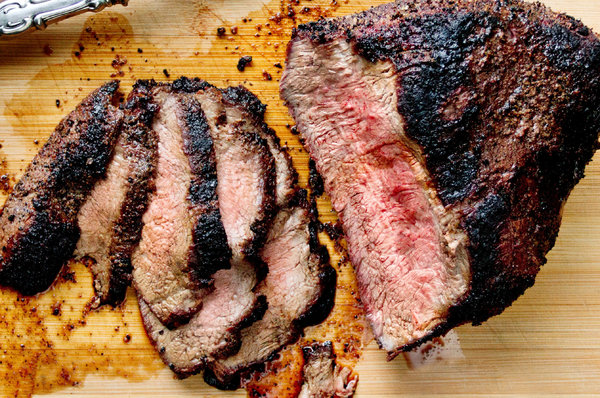

Tri Tip

Description
You might need to ask your butcher (assuming you have one) or even a store meat manager to order in a tri-tip roast. Two pounds is a good size, but if you come across a larger one, by all means grab it as the extra meat makes amazing sandwiches.
The trick is to carve the tri-tip against the grain, which can change directions in this cut. So before you rub it and roast it, take a look at the raw meat and see which direction the long strands of muscle fiber are running on each part of the roast.
After the roast has been cooked, and it has rested for 15 minutes or so, slice the roast in two at the place where the fibers change direction. Carve each piece separately.
Ingredients Required
- 1 whole tri-tip, about 2 pounds
- 2 tablespoons finely ground coffee
- 1 1/2 tablespoons kosher salt
- 1 1/2 tablespoons granulated garlic
- 1 heaping teaspoon black pepper
- 1 tablespoon brown sugar
- 1/4 teaspoon cayenne pepper
- 1/4 teaspoon ground cloves
- 1/4 teaspoon cinnamon
Steps
- Trim silver skin. The meat may have a thick layer of fat, some of which can be sliced off, but keep a good amount to help baste meat.
- Sprinkle meat with rub and massage lightly all over. Cover and refrigerate at least an hour or as long as overnight. Remove from refrigerator an hour before cooking.
- Prepare charcoal grill or heat a gas grill to high. Place roast on grill and sear one side well, 6 to 8 minutes, checking for flare-ups. Turn the roast and sear other side for about the same time. Then lower gas to medium-high or move the meat to a cooler part of the charcoal grill.
- Turn meat again and cook another 8 to 10 minutes. Flip and cook again. A 2-pound roast will require about 20 to 25 minutes total cooking time. The roast is ready when an instant-read thermometer reaches 130 degrees when inserted into the thickest part of the meat.
- Rest roast on a cutting board 10 to 20 minutes. Slice against the grain. The roast is shaped like a boomerang, so either cut it in half at the center of the angle, or slice against the grain on one side, turn the roast and slice against the grain on the other side.